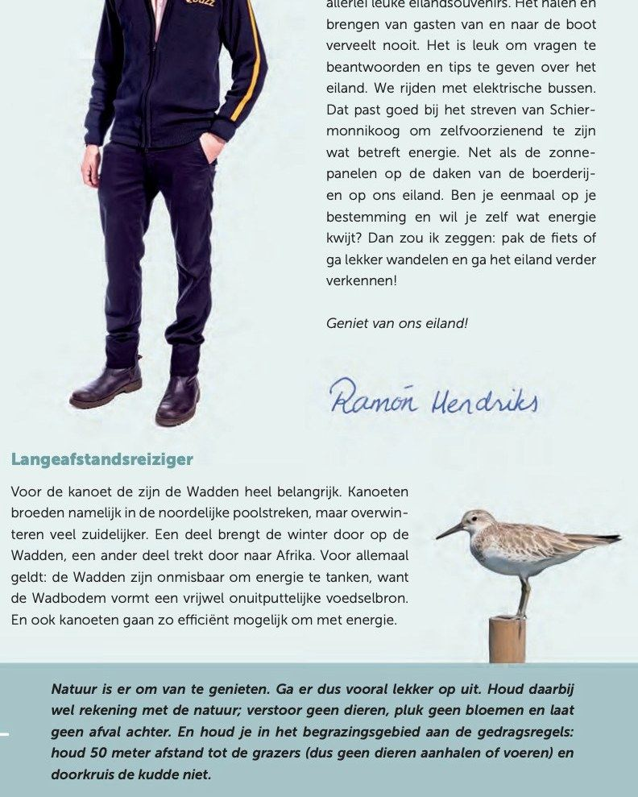
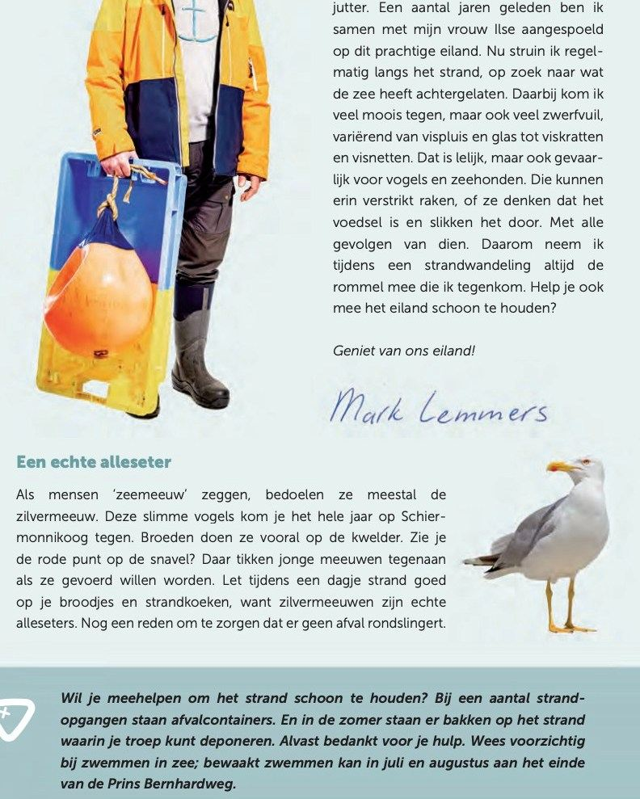
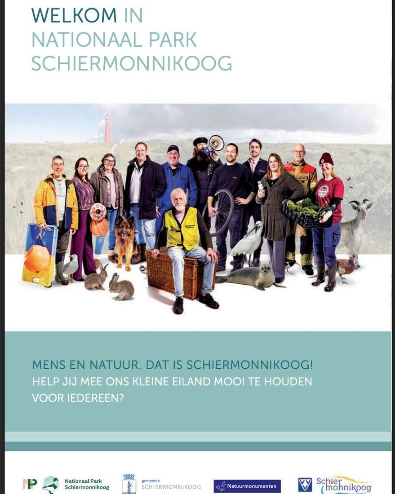

Grote kanoet en geelpootmeeuw in de folder van Schiermonnikoog
- Op de foto
- Grote kanoet en geelpootmeeuw
- Het ging over
- Kanoet en zilvermeeuw



Nationaal Park Schiermonnikoog heeft een prachtige nieuwe folder uitgebracht. Verhalen van eilanders, mooie foto’s en duidelijke regels. Alleen zijn twee vogels in de folder per ongeluk andere soorten dan waar de tekst over gaat.
1️⃣ De ‘kanoet’ is een Grote Kanoet (Great Knot)
De Grote Kanoet is een zeldzame dwaalgast uit Siberië.
Schiermonnikoog heeft een rijke vogelwereld, daar weten wij alles van, maar deze is hier (helaas) nog nooit gezien
De gewone Kanoet (Calidris canutus) wél, maar die staat niet op de foto.
2️⃣ De ‘zilvermeeuw’ is een Geelpootmeeuw
Een soort die maar sporadisch op Schier verschijnt en hier geen broedvogel is.
De echte Zilvermeeuw (Larus argentatus), waar de tekst over gaat, ziet er net even anders uit.
Juist in natuureducatie is soortherkenning belangrijk. Het laat zien welke soorten écht bij een plek horen.
De folder zelf is verder inhoudelijk sterk. Goede verhalen, duidelijke gedragsregels, en precies wat Schier zo bijzonder maakt: mens & natuur samen op een eiland.
Alleen de foto’s… die hadden nog even een Natuurspeld-check mogen krijgen 😉
@schiermonnikoog_natuur @np_schiermonnikoog @hetbakenschiermonnikoog